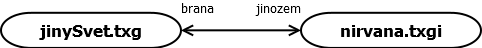

Hedy je jazyk pro tvorbu textových her. Pojmenován je na počest herečky a vynálezkyni Hedy Lamarrové. Umožňuje snadnou tvorbu nelineárních příběhů ve formě herní knihy (gamebooku), do níž je možné doprogramovávat akce až do podoby plnohodnotné textové hry.
Ukázka hry
Mezi uzly se může hráč libovolně pohybovat stisknutím světle zelené klávesy. Následuje popis možností jazyka.
Možnosti textu
Barvy
Barevný text se zapisuje pomocí hranatých závorek. První znak udává barvu a nezobrazí se.
Objekt je cokoliv, co může obsahovat proměnné (uzel, předmět, mod, akce nebo pole). Proměnné patřící objektu jsou lokální, přistupujeme k nimi přes tečku, např. $objekt.@proměnná. Hodnotu proměnné přiřadíme operátorem :=.
node m1 "Místnost 1"
node m2 "Místnost 2"
mod init
m1.@plocha:= 16
m2.@plocha:= 30
$m:= m1
message "Plocha místnosti '{$m.~text}' je [L{$m.@plocha}]."
$m:= m2
message "Plocha místnosti '{$m.~text}' je [L{$m.@plocha}]."
Plocha místnosti 'Místnost 1' je 16.
Plocha místnosti 'Místnost 2' je 30.
Objekt
Se skládá z identifikátoru, popisu a případně lokálních proměnných. Každá lokální proměnná se zapisuje na jeden řádek, jejich výčet končí prázdným řádkem nebo jiným objektem.
node m1 "Místnost1"
.@plocha:= 16
Věc je až na typ syntakticky stejná jako uzel. Rozdíl je pouze sémantický (významový): hra zahlásí chybu, pokud $here neukazuje na uzel nebo pokud mapa propojuje něco jiného než uzly. Teoreticky by bylo možné toto povolit a hráč by mohl "vejít do věci", to vede ale k nepřehlednosti: prakticky je vhodné mezi uzlem a předmětem striktně rozlišovat.
Akce je nabídka činností, které může hráč provést. Akci je možné skrýt nastavením lokální proměnné .@hide na 1 (nastavením na 0 se opět zobrazí).
Pokud žádnou akci nenapíšeme, systém vytvoří výchozí akci pro přesun mezi uzly.
action go "Jít"
select $here from paths ask("Kam chceš jít?")
Pokud napíšeme jinou akci, systém tuto výchozí nedodá a je nutné ji vložit do kódu (se stejným nebo jinými příkazy). Příkazy jsou popsány níže
mod
Mod je soubor příkazů spustitelných z jiných modů nebo akcí spustitelným příkazem run (popsáno níže). Proměnná .~text je zde obvykle nepotřebná, neboť hráč se s modem přímo nesetká.
mod smrt
message "Umřel jsi"
$here:= gameover
after po zobrazení textu uzlu a statusbaru, před zobrazením nabídky akcí
Ukazatel na mod je možné vytvořit pomocí textu:
$report:= "Hello"
Zde se vytvoří anonymní mod (se jménem _tmodX, kde X je číslo rostoucí od 1), který obsahuje jediný příkaz message, který obsahuje zadaný text (zde message "Hello").
pole
Pole obsahuje pouze proměnné stejného typu. Neobsahuje popis (proměnnou .~text) a není možné ho přiřadit proměnné typu $. Je možné ho využít pouze v příkazech select a foreach. Položky pole jsou klíč (libovolného typu) a hodnota (pouze text).
array @cisla
1 "jedna"
10 "deset"
100 "sto"
array $smery
uzelVlevo "doleva"
uzelVpravo "doprava"
array ~preklad
"one" "jedna"
"two" "dvě"
"three" "tři"
Příkazy
Jinde než do akce a do modu nelze příkazy vkládat.
?vars
Vypíše obsah všech proměnných ve hře. Vhodné k ladění.
?commands
Vypíše příkazy všech modů a akcí ve hře. Vhodné k ladění.
message
Vloží text a čeká na stisk klávesy.
message "Najednou se propadla podlaha!"
message!
Totéž, co message, ale před výpisem vymaže obrazovku
message! "Najednou se propadla podlaha!"
text
foreach $item from items filter($place=$here) text "{$item.~see}"
Připojí text k popisu uzlu. Vhodné do modu update. V příkladě se k popisu uzlu přidají obsahu lokálních proměnných .~see všech předmětů, které se zde nachází.
run
Spustí jiný mod:
action paka "Zatáhnout za páku"
run smrt
if - then
if PODMÍNKA then PŘÍKAZ
Vykoná PŘÍKAZ (na stejném řádku), pokud je splněna PODMÍNKA.
PODMÍNKA může být složená z více částí oddělených spojkami
- and splněno, pokud jsou splněny obě části
- or splněno, pokud je splněna alespoň jedna z částí
Před každou částí může být not, která invertuje splnění (z nesplněno dělá splněno a naopak).
Každá část má následující syntaxi:
VLEVO OPERACE VPRAVO
VLEVO je proměnná typu:
- @ (číslo), OPERACE je pak > (větší), < (menší) a = (rovná se), VPRAVO mohou být celočíselné konstanty nebo číselné proměnné a jejich součty nebo rozdíly.
- ~ (text), OPERACE je pak > (VLEVO obsahuje VPRAVO), < (VLEVO je obsaženo ve VPRAVO) a = (rovná se). VPRAVO je vyhodnocený text nebo textová proměnná (provede se výběr alternativy a nahrazení proměnných v textu).
- $ (ukazatel na objekt), OPERACE musí být = (rovná se). VPRAVO pak může být objekt, ukazatel na objekt nebo item (splněno, pokud je VLEVO věc), node (splněno, pokud je VLEVO uzel), mod (splněno, pokud je VLEVO mod).
Nebo je možné testovat štěstí syntaxí:
luck PROCENT%
luck ŠANCE:Z
PROCENT je pravá strana číselných operací (viz výše pro znak @), musí následovat znak %. Podmínka je splněna s uvedenou pravděpodobností
ŠANCE a Z jsou také pravé strany číselných operací. Podmínka je splněna s pravděpodobností ŠANCE / Z. Příklady použití:
if luck 50% then message "Šance 50%"
if not luck 3:4 then message "Šance 1:4"
if luck @zaklad + @bonus % then run uspech
if not luck @zaklad + @bonus : $hrac.@max and $hrac.$zbran=item then run zasah
check
check PODMÍNKA
Podmínka je popsána výše. Pokud není splněna mod nebo akce nevykoná příkazy, které následují po tomto příkazu.
Navíc je možné testovat nesplnění předchozích if:
check noif
Příklad vykoná následující příkazy, pokud před ním nebyla splněna žádná podmínka if.
select
Vybere ukazatel na objekt. Jde ho použít i na pole, kde vybere i proměnné jiných typů, popsáno níže.
select $ukazatel from ZDROJ FILTR SELEKTOR
ZDROJ je jeden z následujících souborů objektů:
- nodes všechny uzly ve hře
- items všechny předměty ve hře
- paths všechny cesty z ukazatele $here
- pole
FILTR projde všechny ukazatele z výběru, a pokud nesplňují podmínku, z výběru je vyřadí. FILTR je nepovinný.
filter(L operace R)
- L je lokální proměnná ukazatele z výběru (její kontext je vždy nastaven na procházenou položku)
- operace je >, < nebo (nejčastěji) =
- R je pravá strana popsaná u příkazu if - then.
Při filtrování polí může být L jedno z následujících:
- @key (klíč u číselných polí), ~key (textová pole), $key (objektová pole)
- ~val hodnota pole (vždy je textová)
SELEKTOR vybere jeden ukazatel z výběru. Je nepovinný, pokud chybí, vybere se náhodný ukazatel z výběru. SELEKTORy mohou být:
- ask("Otázka") hráči je položena otázka a zobrazen seznam zbývajících ukazatelů výběru, ze kterého si vybere. Pokud si nevybere nic (stiskne ESC), výsledný ukazatel zůstane nezměněn. Pokud před tím nebyl definován, je nastaven na null.
- ask!("Otázka") totéž, co ask, ale hráči není dovoleno stisknout ESC a vyhnout se tak volbě.
- min(@promenna) je vybrán ukazatel s nejmenší lokální proměnnou.
- max(@promenna) je vybrán ukazatel s největší lokální proměnnou.
Například můžeme hráči umožnit vybrat si zbraň (volbu uložíme do proměnné $zbran):
select $zbran from items filter(~typ="zbraň") ask("Vyber si zbraň")
Zkrácenější zápis je umožněn makrem, které nahradí část příkazu jedním slovem se syntaxí
macro SLOVO NÁHRADA
Například:
macro zbrane items filter(~typ="zbraň")
action vyberZbrane "Vyber si zbraň"
select $zbran from zbrane ask("Kterou?")
Podobného efektu (ale s vlastním popisem) dosáhneme použitím pole:
array $mojeZbrane
dyka "krátký nůž"
mec "dlouhý nůž"
dlouhyMec "ještě delší nůž"
savle "křivý nůž"
select $zbran from $mojeZbrane ask("Vyber si zbraň")
Z pole můžeme vybrat i čísla nebo text:
array @dysko
0 "nic"
5 "minimum"
15 "běžné"
50 "velké"
select @penize from @dysko ask("Jaké dáš čišníkovi dýško?")
foreach
Má podobnou syntaxi jako select:
foreach $ukazatel from ZDROJ FILTR příkaz
Významy ZDROJ a FILTR je stejný jako u select, příkaz příkaz je vykonán pro každý ukazatel ve výběru, který je pro daný příkaz v proměnné $ukazatel.
message "Všechny zbraně ve hře:"
foreach $zbran from items filter(~typ="zbraň") message "Máme {$zbran}!"
set
Set přidá nebo odebere prvek pole. Syntaxe je podobná path:
set POLE + KLÍČ HODNOTA
set POLE - KLÍČ
Konkrétně:
message "Meč byl zničen!"
set $mojeZbrane - mec
message "Čišníkovi musíš dát nějaké dýško!"
set @dysko - 0
message "Koupil sis novou zbraň."
set $mojeZbrane + obourucak "nůž, co se drží oběma rukama"
message "Velmi jsi zbohatnul."
set @dysko + 200 "nemravné"
path
Path upraví cestu mezi uzly. Syntaxe je
path ODKUD + KAM POPIS_O>K POPIS_K>O
path ODKUD > KAM POPIS_O>K
path ODKUD - KAM
ODKUD a KAM jsou uzly, mezi kterými se upravuje cesta.
- + přidá obousměrnou cestu s popisem POPIS_O>K pro směr ODKUD > KAM a POPIS_K>O pro opačný směr
- > přidá jednosměrnou cestu s popisem POPIS_O>K pro směr ODKUD > KAM
- - odebere cestu mezi uzly ODKUD a KAM
Mapa
Výchozí cesty mezi uzly se nastavují pomocí mapy. Zadávání začíná deklarací map a končí prázdnou řádkou. Na každém řádku je jedna cesta, + je obousměrná, > je jednosměrka, viz popis příkazu path výše.
map
ODKUD + KAM POPIS_O>K POPIS_K>O
ODKUD > KAM POPIS_O>K
Map může být v kódu více, použijí se všechny. Při zopakování cesty pozdější záznam přepíše dřívější.
Popisy cest se ukládají do lokálních proměnných .~target_ID, které je možné ve hře změnit. V tomto příkladě se změní popis přechodu z přízemí na střechu po spuštění prizemi.$zmenPopis:
map
prizemi + strecha "nahoru" "dolu"
mod prizemi.$zmenPopis
prizemi.~target_strecha:= "komínem"
Více souborů
Velké hry je vhodné rozdělit do více souborů (scén), které pokrývají ucelené části hry. Soubory lze mezi sebou propojit externími uzly, viz příklad:
jinySvet.txg
intro "Jiný svět"
initial node start "Jsi na našem světě."
node brana "Jsi u brány na jiný svět."
extern node jinozem from "nirvana.txgi"
map
start + brana "k bráně na jiný svět" "tam, kde hra začala"
brana > jinozem "vstoupit do brány"
nirvana.txgi
node jinozem "Jsi na jiném světě."
final node cil "Dosáhl jsi nirvány."
extern node brana from "jinySvet.txg"
map
jinozem + cil "k fontáně" "k bráně"
jinozem > brana "do našeho světa"
propojení scén: 
Oba soubory jsou mezi sebou vzájemně propojeny syntaxí
extern node UZEL from "SOUBOR"
kde UZEL je popsaný v souboru SOUBOR. Zde jsme mu dali příponu .txgi (TeXt Game Include), protože neobsahuje výchozí (initial) uzel, a tudíž nejde hrát jako samostatná hra.
Všechny soubory hry se musí nacházet ve stejné složce (do uvozovek se nezadává cesta k SOUBORu).
Po načtení hry jsou odkudkoliv přístupné všechny objekty definované v libovolném souboru.
Komentáře
Komentáře jsou části kódu, které se ignorují, slouží pro zápis poznámek. Zápis je dvojí:
- řádek začínající # do konce řádky (viz výše v popisu mapy)
- od znaků #| až po znaky |# (víceřádkový komentář)
### UZLY ###
initial node vchod "Jsi u vchodu do opuštěné haly."
node hala "Nacházíš se v rozhlehlé opuštěné hale. Nikdo tu není."
#|
mapa továrny
ostatní části jsou zmíněny jinde
|#
map
vchod + hala "do haly" "ke vchodu"
...
Dodatky
Podmínky
and má vyšší prioritu než or (jakoby části s and byly uzávorkované). Hedy ale nepodporuje závorky v podmínkách: pokud v podmínce závorky potřebujete, podmínka je nepřehledná a je vhodnější ji rozdělit do více částí: A and (B or C) v Hedy není možné zapsat jako:
if @jeZivy=1 and (@maZbran=1 or @maKouzlo=1) then ...
Bez závorek je možné ale zapsat ekvivalentní
@muzeUtocit:= 0
if @maZbran or @maKouzlo then @muzeUtocit:=1
if @jeZivy=1 and @muzeUtocit=1 then ...
Zpracování kódu
Kód je ryze interpretovaný. Zpracování probíhá řádek po řádku ve dvou fázích:
- v první fázi se načtou všechny objekty
- v druhé fázi se načtou všechny lokální proměnné a vytvoří se mapa
- poté se spustí hra
Nezáleží tedy na pořadí, v jakém objekty definujeme, s vyjímkou definování modu jako ukazatele, např.:
item klic "Klíč"
item pacidlo "Páčidlo"
# musí být definován až ZA item klic
mod klic.$otevri
message "Otevírám klíčem..."
# musí být definován až ZA item pacidlo
mod pacidlo.$otevri
message "Otevírám páčidlem..."
Ekvivalentní kód, kde nezáleží na pořadí:
# může být definován i PŘED item klic
mod klicOtevri
message "Otevírám klíčem..."
# může být definován i PŘED item pacidlo
mod pacidloOtevri
message "Otevírám páčidlem..."
item klic "Klíč"
.$otevri:= klicOtevri
item pacidlo "Páčidlo"
.$otevri:= pacidloOtevri
Podmíněný mod
Podmíněný mod je varianta modu, který se vykoná za určité podmínky. Pokud je podmínka splněna, nevykonávají se další varianty modu. Varianty se testují v pořadí, v jakém byly zadány v kódu. Případný mod bez varianty je zařazen nakonec.
mod pozdrav
message "Pozdravil jsi krásný den."
mod pozdrav if $here=brana
message "Pozdravil jsi vrátného."
Výšeuvedený příklad při použití modu pozdrav použije variantu, pokud hráč stojí u brány; všude jinde se použije mod bez varianty. Použijeme-li příkaz ?commands, uvidíme, že kód se přeloží, jako bychom zapsali méně přehledným způsobem:
mod _imod1
message "Pozdravil jsi vrátného."
mod pozdrav
if $here=brana then run _imod1
check noif
message "Pozdravil jsi krásný den."
Nepřímý odkaz
Téhož efektu, jako u podmíněných modů, je možné docílit pomocí nepřímých odkazů:
item pozdrav
.$use:= from $here.$zdravim default "Pozdravil jsi krásný den."
node brana
.$zdravim:= "Pozdravil jsi vrátného."
action a1 "Pozdravit"
run item.$use
Podmíněný mod použijeme, když potřebujeme, aby akce či mod za určitých okolností (při určitém stavu proměnných) udělal něco jiného než obvykle.
Nepřímý odkaz použijeme, když potřebujeme manipulovat s věcí (použít, přečíst, začarovat...) na mnoha různých místech a na každém z nich má akce jiný efekt.
Bez těchto obratů je možné se obejít a zapsat totéž výšeuvedeným opisem. U rozsáhlých her je však třeba dodržovat určitá pravidla známá z objektového programování, a tyto obraty je umožňují dodržet. Bez těchto rozšíření není prakticky možné psát dlouhé hry.
Psaní příběhu
Počítačové hry jsou obvykle založené na audiovizuálních efektech: vnímání herní scény a reakce na ni. Zde máme k dispozici pouze text s občasným zvýrazněním, který oslovuje především čtenáře knih. Ty vtáhne do děje dobrý příběh a hlavním aktérem je jejich fantazie. Je to podobný rozdíl, jako mezi knihou a filmem: film běží v čase a divák se nechá unášet. Kniha má mnohem více prostoru na popisy detailů a skrytých věcí: když je někde nahuštěný děj, čtenář může zvolnit nebo zastavit a uvědomit si prožitek, než pokračuje dál.
Proto dobré gamebooky začínají na dobrých příbězích. K nim se pak vytváří alternativní dějové linie. Více viz Pár základních kamenů při tvorbě gamebooků.
Uveďme si příklad stavějící na Ezopově bajce O pyšné lampě:
Na stole stála svítící lampa, čistá a vyleštěná. Její světlo bylo zářivé a dopadalo na stůl i do celého pokoje.
Lampa byla na sebe velmi pyšná. Ani stůl, ani knihy nesvítily, jen ona zářila. Řekla: "Podívejte se na mně, nikdo z vás neumí svítit. Svítím víc, než měsíc na obloze i s hvězdami. Dovedu svítit tak, jako slunce!"
Co se tak chlubila, hrálo si u stolu malé kotě. Zatáhlo za cíp ubrusu a bác. Lampa spadla a zhasla. "Proč nám nesvítíš teď", ? řekla kniha. "Už ze mne nikdo nemůže číst, když nesvítíš! Ale podívej se, měsíc svítí dál!
Stačilo malé kotě, aby tě sfouklo, ale měsíc, hvězdy i slunce vyzařují světlo navěky."
Tuto hru převedeme do lineárního příběhu:
intro >>>
>Stojíš na prostřeném stole, kolem tebe rozložené knihy. Jsi svítící lampa, čistá a vyleštěná. Měla bys začít dělat kariéru.
action do "Udělat"
select $here from paths ask("Co chceš udělat?")
initial node sviceni >>>
>Tvé světlo je zářivé a dopadá na stůl i do celého pokoje. Krom sebe vidíš venku přes okno zářit měsíc a hvězdy (je hluboká jasná noc). Opodál si hraje kotě.
node rozbiti >>>
>Jsi na své světlo velmi pyšná. Ani stůl, ani knihy nesvítí, jen ty záříš.
>[D"Podívejte se na mně, nikdo z vás neumí svítit. Svítím víc, než měsíc na obloze i s hvězdami. Dovedu svítit tak, jako slunce!"]
>Rozzářila ses jasným světlem, což přilákalo kotě, které si hrálo opodál. Zatáhlo za cíp ubrusu a bác. Spadlas' a zhasla.
>
>[D"Proč nám nesvítíš teď?"], řekla kniha. [D"Už ze mne nikdo nemůže číst, když nesvítíš! Ale podívej se, měsíc svítí dál!"]
final node ponauceni "Stačilo malé kotě, aby tě sfouklo, ale měsíc, hvězdy i slunce vyzařují světlo navěky. [LPýcha předchází pád.]"
map
sviceni > rozbiti "Zazářit ještě víc"
rozbiti > ponauceni "Vzít si ponaučení"
V programu Hedy pak hráče čekají následující obrazovky:
1. "stránka"
Stojíš na prostřeném stole, kolem tebe rozložené knihy. Jsi svítící lampa, čistá a vyleštěná. Měla bys začít dělat kariéru.
Stiskni klávesu...
2. "stránka"
Tvé světlo je zářivé a dopadá na stůl i do celého pokoje. Krom sebe vidíš venku přes okno zářit měsíc a hvězdy (je hluboká jasná noc). Opodál si hraje kotě.
Co chceš udělat?
A: Zazářit ještě víc
3. "stránka"
Jsi na své světlo velmi pyšná. Ani stůl, ani knihy nesvítí, jen ty záříš.
"Podívejte se na mně, nikdo z vás neumí svítit. Svítím víc, než měsíc na obloze i s hvězdami. Dovedu svítit tak, jako slunce!"
Rozzářila ses jasným světlem, což přilákalo kotě, které si hrálo opodál. Zatáhlo za cíp ubrusu a bác. Spadlas' a zhasla.
"Proč nám nesvítíš teď?", řekla kniha. "Už ze mne nikdo nemůže číst, když nesvítíš! Ale podívej se, měsíc svítí dál!"
Co chceš udělat?
A: Vzít si ponaučení
4. "stránka"
Stačilo malé kotě, aby tě sfouklo, ale měsíc, hvězdy i slunce vyzařují světlo navěky. Pýcha předchází pád.
Game over!
Nyní do příběhu doplníme alternativní dějové linie. Hráč se může na dvou místech rozhodnout a moudrým rozhodnutím může i odvrátit nepříznivou situaci a dostate se do linie ústící v lepší konec ("vyhrát"):
intro >>>
>Stojíš na prostřeném stole, kolem tebe rozložené knihy. Jsi svítící lampa, čistá a vyleštěná. Měla bys začít dělat kariéru.
action do "Udělat"
select $here from paths ask("Co chceš udělat?")
initial node sviceni >>>
>Tvé světlo je zářivé a dopadá na stůl i do celého pokoje. Krom sebe vidíš venku přes okno zářit měsíc a hvězdy (je hluboká jasná noc). Opodál si hraje kotě.
node rozbiti >>>
>Jsi na své světlo velmi pyšná. Ani stůl, ani knihy nesvítí, jen ty záříš.
>[D"Podívejte se na mně, nikdo z vás neumí svítit. Svítím víc, než měsíc na obloze i s hvězdami. Dovedu svítit tak, jako slunce!"]
>Rozzářila ses jasným světlem, což přilákalo kotě, které si hrálo opodál. Zatáhlo za cíp ubrusu a bác. Spadlas' a zhasla.
>
>[D"Proč nám nesvítíš teď?"], řekla kniha. [D"Už ze mne nikdo nemůže číst, když nesvítíš! Ale podívej se, měsíc svítí dál!"]
node zhasnuti "Koukala jsi na knihy, jak se jejich písmo krásně odráží ve tvém světle. Ale co ty knihy dávaly tobě? Nic. Proč bys jim měla svítit? Rozhodla ses zhasnout. Přišel člověk a šroubovákem se tě snaží přimět ke svícení."
final node vyhozeni "Rozhodla ses, že zadarmo svítit nebudeš. Po chvíli snažení to člověk vzdal, hodil tě do elektroodpadu a na tvé místo dal novou lampu. [LKdo čím zachází, tím také schází.]"
final node ponauceni "Stačilo malé kotě, aby tě sfouklo, ale měsíc, hvězdy i slunce vyzařují světlo navěky. [LPýcha předchází pád.]"
final node pomoc >>>
>Jak jsi tak bezmocně ležela, všimla sis v koutě staré zaprášené žárovky.
>[D"Žárovko, byla jsem krásná a zářící lampa, a teď tu ležím bez užitku stejně jako ty a brzy mě také přikryje prach a nikdo si na mě už nevzpomene, jak jsem krásně zářila. Co mám dělat?"]
>Žárovka zamrkala a setřásla ze sebe prach. [D"Nejsem bez užitku, měsíce čekám na tuto chvíli, a teď tě opět vynesu na výsluní!"]
>Žárovka se vymrštila, zašroubovala se na místo původní rozbité žárovky - a společně jste šťastně svítily dál. Střídmě, abyste opět nepřilákaly kotě, ale o to déle a příjemněji. [LLíná huba, hotové neštěstí.]
map
sviceni > rozbiti "Zazářit ještě víc"
sviceni > zhasnuti "Zhasnout"
zhasnuti > vyhozeni "Nerozsvítit se"
zhasnuti > sviceni "Rozsvítit se"
rozbiti > ponauceni "Vzít si ponaučení"
rozbiti > pomoc "Požádat žárovku o pomoc"
A z bajky se stává hra. Z několika příběhů jeden, kompaktní.
Dlouhé hry
Ezopova bajka v příkladu výše je přehledná od začátku do konce. Při tvorbě hry rozsahem srovnatelné s knihou je nutné mít přehlednější strukturu. Zde je dobré kreslit si myšlenkovou mapu rozdělenou do scén.
Každá scéna je samostatný soubor s příponou .txgi, který nelze hrát samostatně. U scény by mělo být zapsáno, jaký stav hry (proměnných vyžaduje), jaké jsou její externí uzly (ústící do jiných souborů) a vstupní uzly (přicházející z jiných souborů.
V hlavním souboru hry je pak vhodné ponechat pouze herní mechaniku (akce) a objekty (předměty, možná mody), které jsou používané napříč scénami.
V jednotlivých scénách je dobré všechny identifikátory prefixovat něčím unikátním, aby nedošlo ke konfliktu.
S tímto rozvržením je pak možné izolovaně se věnovat konkrétní scéně (pracujeme s hlavním souborem a souborem scény). Je tak možné i psát ve více lidech nebo nezávisle rozšiřovat cizí rozsáhlou hru.